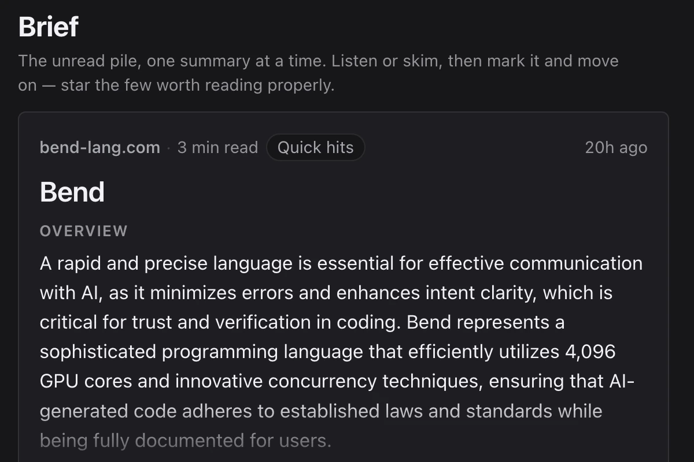
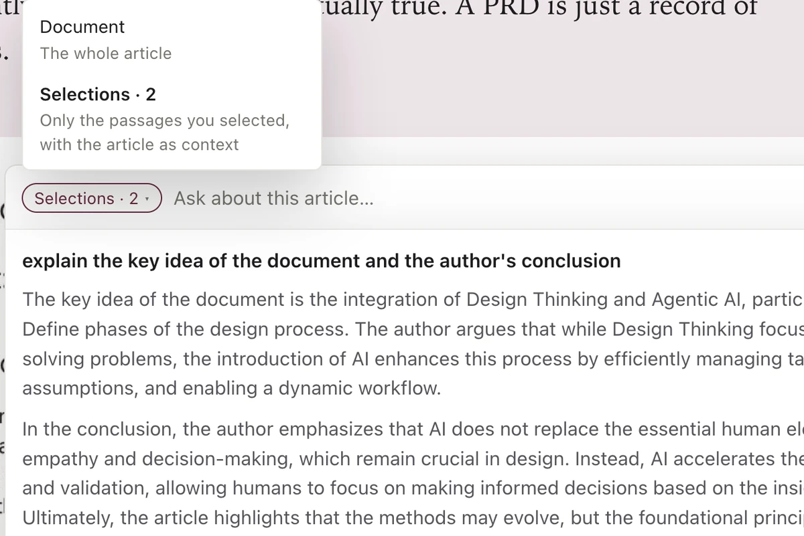

Brief
The unread pile, one summary at a time
Brief turns the backlog into a short queue. Listen or skim, mark it and move on, and star the few worth reading properly.

An AI read-later app
Save an article and Semnas reads it with you. You get a summary, the key points, an audio version you can listen to, and answers when you ask it questions. The more you read, the better it knows what to put in front of you next.

Brief turns the backlog into a short queue. Listen or skim, mark it and move on, and star the few worth reading properly.

Every saved article opens with an overview and a narrated version, so an 8-minute read can be a 90-second listen when that is all you have.

Summarize a section, pull out its key points, check its reading level or add your own note. It all sits in the margin next to the text it came from.

Ask about the whole piece or only the passages you selected, and get an answer grounded in the text in front of you.

Articles come in without the clutter. Figures, diagrams and code stay where the author put them.

A recommender learns from what you read and fills Discover and your daily Brief with more of the good kind.
An extension for Chrome, Edge and Safari captures the page as you see it, including pages behind a login.
Articles, highlights and notes are all searchable, so the thing you read in March is still there when you need it.
Semnas is in private beta.
We are reading with it every day and opening it up soon. Check back here for the launch.